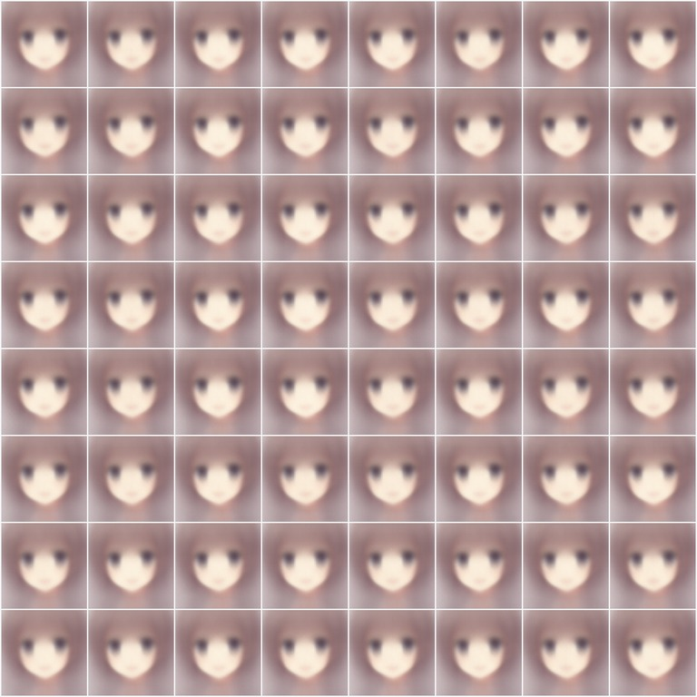
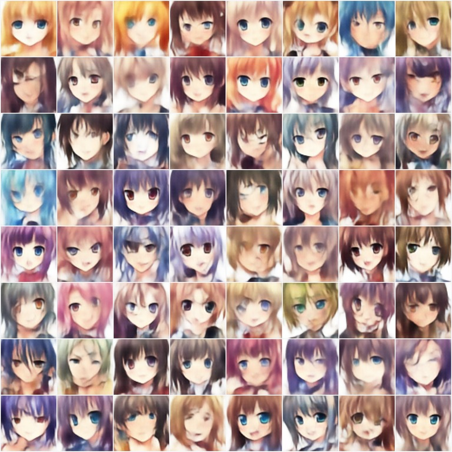

Un cómic en 8 viñetas43.102 caras anime · 4 modelos · 17 experimentos · cifras reales
1 · EL LABORATORIO
Cuatro maneras de aprender a crear caras.
Todo local, en un portátil. 🛠️ Sin nube.
Un laboratorio visual para entender modelos generativos: Autoencoder, VAE, GAN y Diffusion, entrenados sobre 43.102 caritas anime de 64×64.
2 · EL PROBLEMA

¡¿Por qué todas las caras son la misma mancha marrón?!
VAE · KID 608 · div 0,15
2026. La app funciona, la teoría es correcta… y el panel «Generación» del VAE escupe 64 veces la misma mancha. La GAN sale tosca. Difusión, blanda.
3 · EL DIAGNÓSTICO
La pérdida sumaba peras con píxeles: el error iba «por píxel» y la KL «por dimensión».
Con β=1 de verdad… el latente se rinde y z deja de informar.
El bug del VAE: la regularización pesaba miles de veces de más, aplastaba la KL a 0 y el decoder solo sabía pintar la «cara promedio». El arreglo: dividir la KL entre 12.288 (+ warmup de β + clamp de logσ²).
4 · EL CICLO AGÉNTICO
La v3 no «afina a ojo»: monta un arnés de experimentos. La métrica nueva (KID: distancia a las caras reales, menor = mejor) convierte «me parece mejor» en un número.
5 · EL VAE, ARREGLADO

v2 · KID 608
v3 · KID 121
Misma red, mismos datos: solo cambió la pérdida… y aparecieron 64 caras distintas.
−80 % de KID y diversidad 0,15 → 0,98. Suaves —es la firma del VAE— pero caras de verdad. β=0,5 elegido con barrido medido; 40 epochs; variante grande.
6 · LA GAN, AL GIMNASIO
En sprints estos trucos pierden…
…en maratones, arrasan. Medidlo donde va a vivir.
Cuatro estabilizadores (EMA, etiquetas 0,9, DiffAugment, lr_G/lr_D) + su presupuesto real: dataset completo y 60 epochs. La ablación honesta descartó TTUR.
7 · DIFFUSION, DE NOCHE
Zzz… cada epoch son 2 minutos. Y si me corto, reanudo.
175 → 19,4 · el mejor del lab
A difusión no se le tocó el algoritmo: dataset completo, warmup de lr y entrenamiento reanudable. KID 19,4 — el mejor del laboratorio, como predice la teoría.
8 · MORALEJA
El ranking que predice la teoría… ahora está medido.
Misma vara para todos (KID ×1000, menor = mejor). Todo reproducible: experiments/ledger.jsonl + «Lista de Mejoras.md» + el manual v3 en PDF.